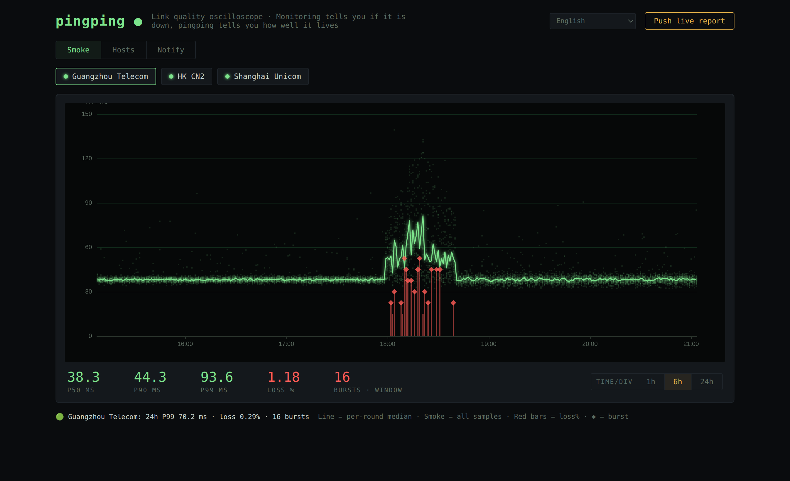
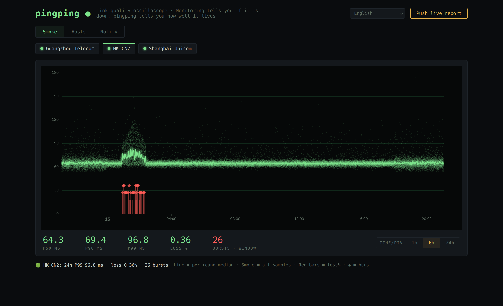
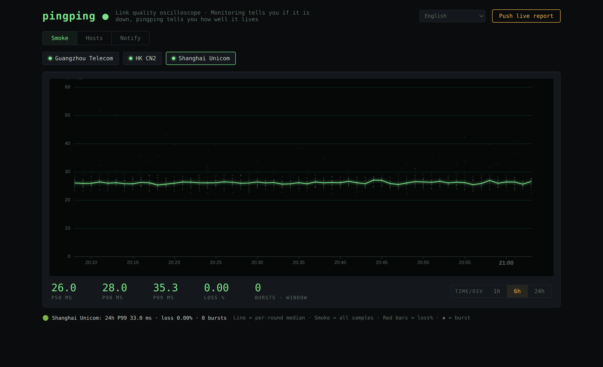

A modern SmokePing alternative: single-binary link-quality oscilloscope. RTT distribution smoke graphs, robust z-score burst detection, webhook alerting. Zero dependencies — no Docker, no database, no root.
链路质量示波器 · 单二进制零依赖 · 烟雾图 + 突发检测 + 结论先行的告警

A 40-minute congestion event. Averages hide this; distributions don't. — 均值抹平的故障,分布让它现形
One static binary + text files. Air-gapped friendly: scp two files and it runs. Data is JSONL you can grep, jq, and tar.
单二进制 + 文本文件,隔离网 scp 即用,数据可 grep
20 probes per round, every sample plotted. The smoke encodes latency, jitter and loss in one glance — SmokePing semantics, 2026 tooling.
存分布不存均值 —— 烟雾图一眼读出延迟、抖动、丢包
Robust z-score burst detection and P99 baselines turn charts into sentences: pushed to Feishu cards or plain JSON webhooks. Weekly heartbeat proves the watchman is awake.
告警说人话,飞书卡片 / 通用 JSON 双格式,周心跳证明守夜人醒着

24h: overnight degradation, evening jitter

A healthy link is just a thin bright line